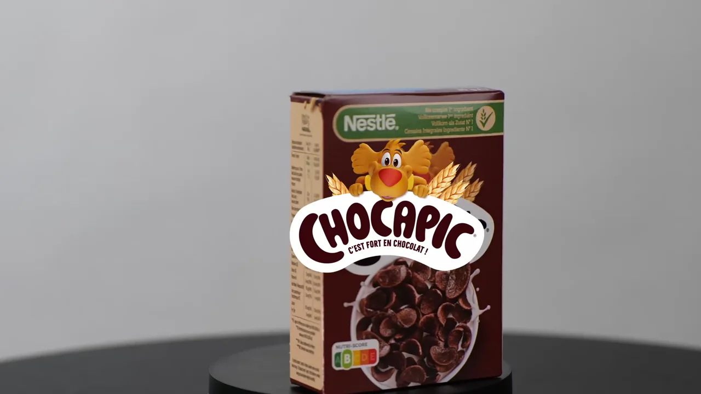
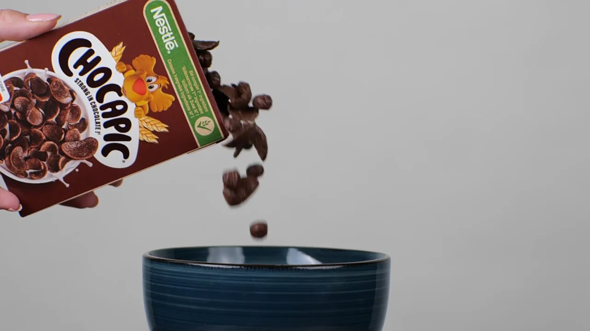
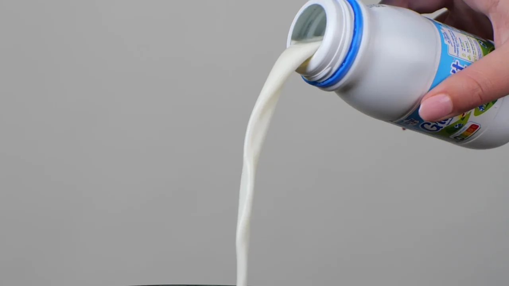
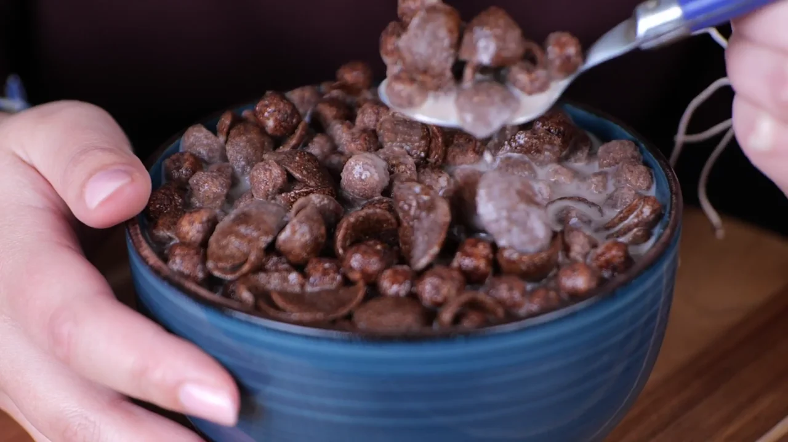
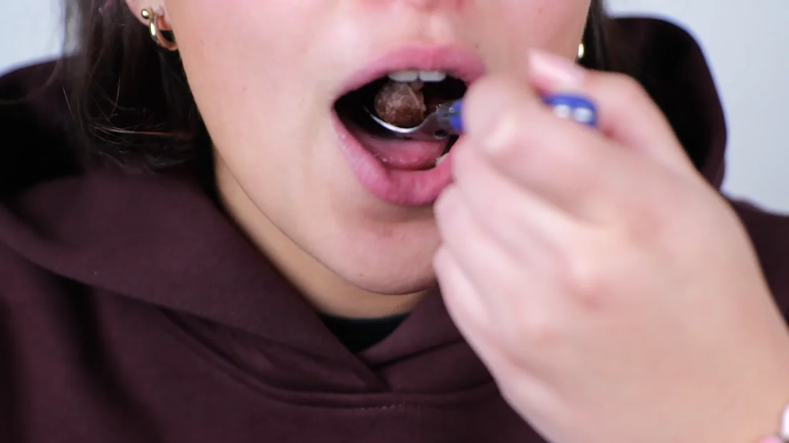
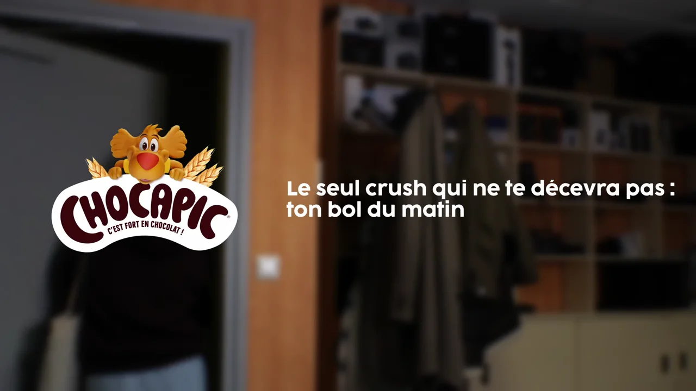

Universitaire
pub chocapic
Une publicité de 34 secondes pour les céréales Chocapic, tournée et montée en binôme : du paquet au bol, jusqu'au départ du matin.
Projet étudiant, sans lien officiel avec la marque.
le brief
Réaliser une publicité vidéo, à deux, sur le produit de notre choix. Nous avons choisi les céréales Chocapic.
mon role
J'ai filmé la pub et je me suis occupée du montage sur DaVinci Resolve. Le cadrage, nous l'avons pensé à deux, et nous avons travaillé les réglages de la caméra plan par plan.
Un ralenti sur la chute des céréales pour rendre le geste plus gourmand, et un arrière-plan flou sur les gros plans du bol pour que le regard reste sur le produit.
le decoupage
La pub suit le petit-déjeuner dans l'ordre, jusqu'à la signature de fin : « Le seul crush qui ne te décevra pas : ton bol du matin. »
-

le paquet -

les céréales -

le lait -

le bol -

la dégustation -

la signature